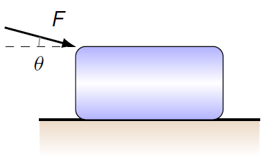
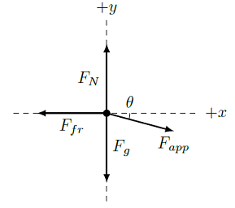
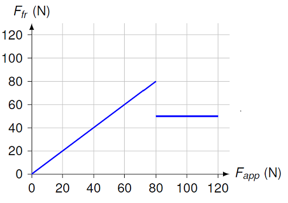
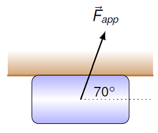

Friction¶
Overview¶
If you have some discomfort with Newton’s first law of motion, it’s probably because of the widespread presence of frictional forces in our everyday lives. Whenever we roll a ball along a table, the ball will eventually stop, not because that is the “natural” motion of all objects, but because of friction between the ball and the table. This was one of the difficult mental leaps that had to be made to go from the thoughts of Aristotle and the ancient Greeks, to the modern viewpoint on physics: motion stops because there are forces present that cause this stop, not because the “natural state” of an object is always at rest. This flip between viewpoints allows us to describe in detail the forces that cause motion to change, rather than throwing up our hands and saying it’s the way things are.
This leads us into the specific force of friction as our next topic. Leonardo da Vinci was one of the first people to systematically examine the size of the frictional force. In a series of experiments, he showed that friction does not depend on the contact area between the two surfaces, and that increasing the load on an object will increase the frictional force proportionally. However, although his discoveries were written into his notebooks, these were not publicly known until hundreds of years later.
da Vinci’s laws of friction were rediscovered by the French instrument maker and physicist Guillaume Amontons around 1700, and hence are often called “Amontons’ laws”. These rules were verified by Charles-Augustin de Coulomb (whom we will see later with the electrostatic force) about eight decades later.
The frictional force is a complicated area of study, and researchers are continuing to look into its properties. This is because, not only is it interesting, but it has obvious industrial and engineering applications. We will examine only a simple model of friction here.
Here are the objectives for this lesson:
Describe the difference between the static frictional force and the kinetic frictional force.
State the relationship between the frictional force and the normal force.
State the maximum value of the static frictional force.
Given an object moving along a surface with friction, calculate the acceleration of the object.
Friction¶
Suppose you are rearranging the furniture in your living room, and decide you want to move your couch. You give it a push to slide it along the carpet in the room. To make things definite, let’s make it a couch with a weight of 2.00 kN, and you start out by applying a force of 200. N to the couch. It doesn’t move, so you push harder with 400. N. It still doesn’t move, so you push with 600. N. Still doesn’t move. You activate those honed muscles of yours and push with 800. N, which is finally enough to get the couch to move. Not only does it move, but it starts accelerating across the living room! So, you push with only 600. N, and (unlike before), the couch now moves at a constant velocity.
I’m sure you can think of some situation like this, where you have to apply a force to get something to start moving. Once you do get it moving, you need less force to keep it moving. This shows that there are two separate types of frictional force.
The static frictional force acts on an object when it is stationary relative to the surface it is sitting on. Notice that they may be moving together – think of a crate in the flatbed of a pickup truck, for example.
The kinetic frictional force acts on an object moving relative to the surface it is on. This may be due to the object moving on a stationary surface, or the other way around. The magnitude of the kinetic frictional force is usally less than that of the static frictional force.
Once the couch in the example above starts moving, then only the kinetic frictional force is acting on it. Before that, however, your applied force is opposed by the static frictional force. Note how it changed! As you increased the applied force, the static frictional force matches it, at least up to a point. Beyond that maximum, though, friction was not strong enough to prevent the couch from moving, and now the kinetic friction was involved.
As mentioned above, da Vinci, Amontons, Coulomb, and others started a detailed study of the properties of the friction force. Their model of friction, described in this lesson, has two basic properties:
The direction of the frictional force \({\vec F}_{fr}\) is always opposing the motion of an object, or the potential motion, if the object is at rest.
The magnitude \(F_{fr}\) of the frictional force on an object on a surface is proportional to the normal force due to the surface, acting on the object.
Let’s talk about these in more detail, starting with the direction. Think again to the example mentioned earlier of a crate in a flatbed truck. As the truck drives along, if the flatbed’s surface were completely smooth, the crate would have no horizontal force on it, and it would slide backwards. To keep the crate in place, the static frictional force acts opposite to this motion, in the direction the truck is moving. This is what I mean by opposing the potential motion of the object. Thus, it is actually the frictional force moving the crate forward!
For the magnitude, since the force of friction is always proportional to the normal force, then it makes sense to look at the ratio of the frictional and normal forces; this will be a constant, known as \(\mu\) (“mu”). Thus, the coefficient \(\mu\) is the ratio of the two magnitudes, or
Notice that, since \(\mu\) is the ratio of two forces, it has no units! This constant is roughly the same for a given type of friction (static or kinetic) with any pair of surfaces, e.g. rubber on carpet, for someone walking in their house with shoes on. There will be a coefficient of static friction \(\mu_s\) and a coefficient of kinetic friction \(\mu_k\) for each such surface pair. These coefficients must be measured experimentally, by going into the lab and moving the two surfaces against each other.
Let’s now get specific about the relationship between the normal and friction forces. Remember the example we had above, with the couch. Specfically, the static frictional force would change, since you altered your applied force. Thus, the force of static friction will actually have a range of values, up to some maximum static frictional force. To show this, the magnitude of \(F_{fr, s}\) is given by an inequality; the static frictional force is limited by its largest magnitude. Mathematically, this is
where, as before, \(F_{fr, s}\) is the force of static friction, \(\mu_s\) is the coefficient of static friction, and \(F_N\) is the normal force. On the other hand, the kinetic frictional force is constant, so it is a straight equality:
where \(F_k\) is the force of kinetic friction, and \(\mu_k\) is the coefficient of kinetic friction.
The PhET application linked below allows you to play around with the force of friction, especially if you select the “Friction” portion of the app.
Use the “Friction” part of the PhET to answer the following questions.
Problem
Using the default values, what is the coefficient of static friction between the crate and the ground? What is the coefficient of kinetic friction? Does it matter if you change the object you are pushing, or add mass on top of it?
Answer: I don’t know.
Problem
Find the value of the unknown mass for the gift-wrapped box.
Answer: I don’t know.
As another demonstration of the frictional force, let’s make a table of the applied forces on the couch. We assume that your applied force and the force of friction are the only horizontal forces.
Problem
Let the coefficient of static friction \(\mu_s\) be 0.375, and the coefficient of kinetic friction \(\mu_k\) be 0.250. Remember that the couch has a weight of 2.00 kN. If the living room floor is flat, use this to calculate the values of the maximum static frictional force, and the kinetic frictional force, and fill in the values of the frictional force in the table below.
\(F_{app}\) (N) |
\(F_{fr}\) (N) |
|---|---|
200. |
|
400. |
|
600. |
|
800. |
Answer: For this problem, you first need to find the normal force of the floor acting on the couch. Since the floor is flat, the magnitude of the normal force is equal to the value of the couch’s weight, or 2.00 kN. This means the maximum magnitude of the static frictional force is \(\mu_s F_N = (0.375)(2000 \textrm{ N}) = 750.\) N, while the constant value of the kinetic frictional force is \(\mu_k F_N = (0.250)(2000 \textrm{ N}) = 500.\) N Then, the completed table of frictional forces should look like the one given below.
\(F_{app}\) (N) |
\(F_{fr}\) (N) |
|---|---|
200. |
200. |
400. |
400. |
600. |
600. |
800. |
500. |
Problem
After the couch starts moving, and you apply a force of 600. N on it, what is the frictional force value between the floor and the couch?
Answer: Once the couch is moving, the frictional force is kinetic, so the force of friction has a magnitude of 500. N.
An example: Multiple forces¶
Now that we have a model of the frictional force, let’s see how it interacts with some of the other forces we have dealt with. I will work through the following example. A block with a mass of 5.00 kg is moving because of a 20.0 N applied acting at an angle of 15.0\(^\circ\) below the horizontal. The coefficient of kinetic friction between the block and the horizontal surface is 0.200. Determine the horizontal acceleration (magnitude in m/s\(^2\)) of the block.

As always, the first step should be to draw a FBD for the block. This will include not only the frictional force, but also the gravitational, normal, and applied forces. The FBD of the block is shown below.

You might think we only need to find the horizontal forces on the block, but since the friction force depends on the normal force, we need to solve for the vertical forces as well. In addition, the downward acting applied force will change the normal force, so we need to look out for that. If we write down the net force on the block, we have
Taking the \(x\) and \(y\) components, then
and
We solve first for the normal force magnitude \(F_N\), using the fact that \(a_y = 0\) (the block is not accelerating vertically). Then,
We know the block is moving, so the frictional force is kinetic; substituting the normal force into the kinetic friction force equation, the \(x\) force equation becomes
With a little rearranging, this gives the size \(a_x\) of the acceleration to be
Plugging in the given values results in an acceleration of 1.69 m/s\(^2\) to the right.
Problem
A 500. N crate starts at rest on the concrete floor of a warehouse. You exert a horizontal applied force of 350. N. The coefficient of static friction is 0.735, and the coefficient of kinetic friction is 0.580.
What is the acceleration of the crate?
What force is necessary to get the crate moving?
Answers: 0.00 m/s\(^2\); 368 N
Problem
An applied force \(F_{app}\) exerted horizontally starts to act on a 125 N block initially at rest. Below is shown a graph of the frictional force \(F_{fr}\) on the block from the floor, as a function of the applied force as it increases in size from zero newtons. Use this graph to find the values of the coefficients of static and kinetic friction.

Answers: \(\mu_s = 0.640\), \(\mu_k = 0.400\)
Problem
A NAPSter, crazed by the latest victory of the football team, uses a force \({\vec F_{app}}\) of magnitude 90.0 N to push a 4.00 kg block across the ceiling of their room, as shown below. The coefficient of kinetic friction between the block and the ceiling’s surface is 0.400. Find the magnitude of the block’s acceleration (in m/s\(^2\)).

Answer: 3.16 m/s\(^2\)
Summary¶
After today’s class, you should be able to:
Describe what type of friction is appropriate for a given situation
Explain how much static frictional force is present when other forces are applied to a stationary object
Use the force of friction in Newton’s 2nd law